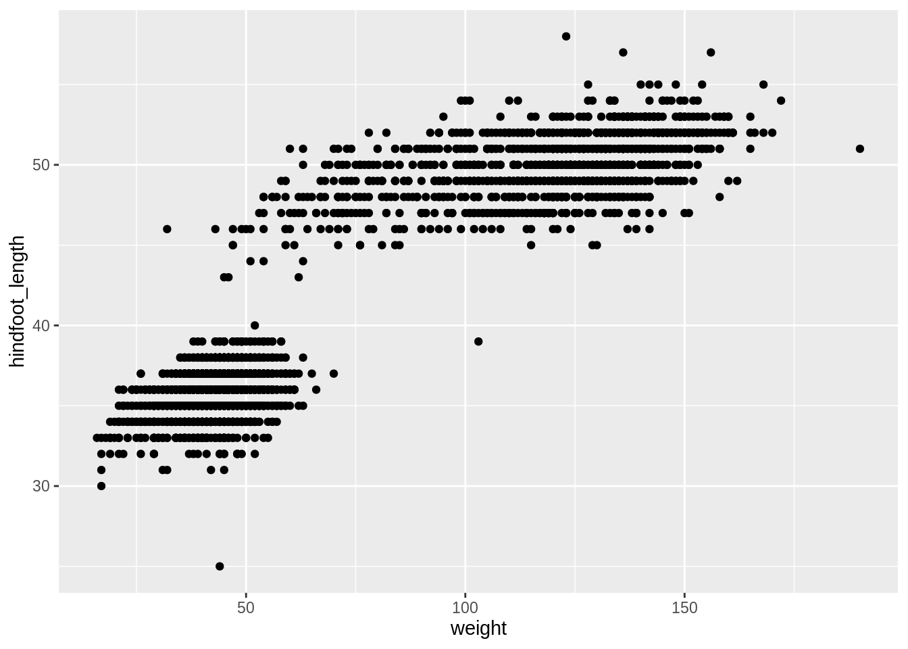
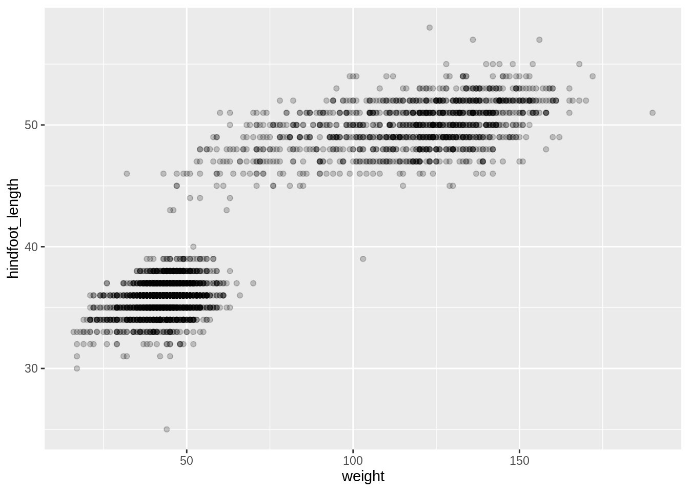
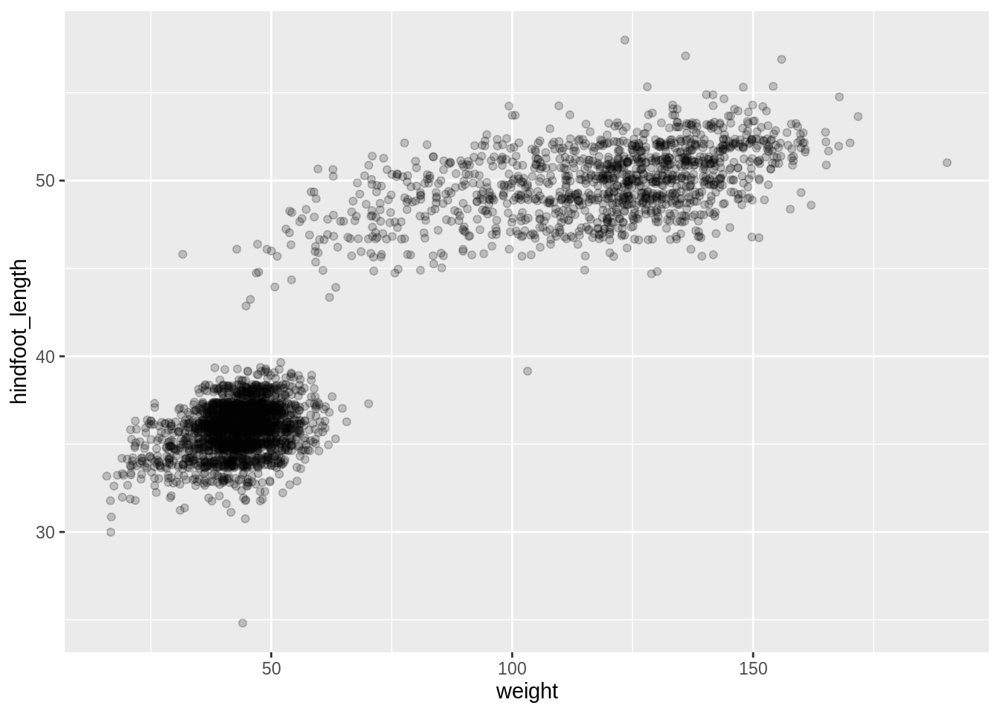
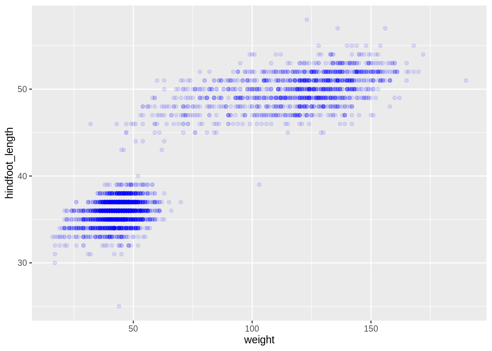
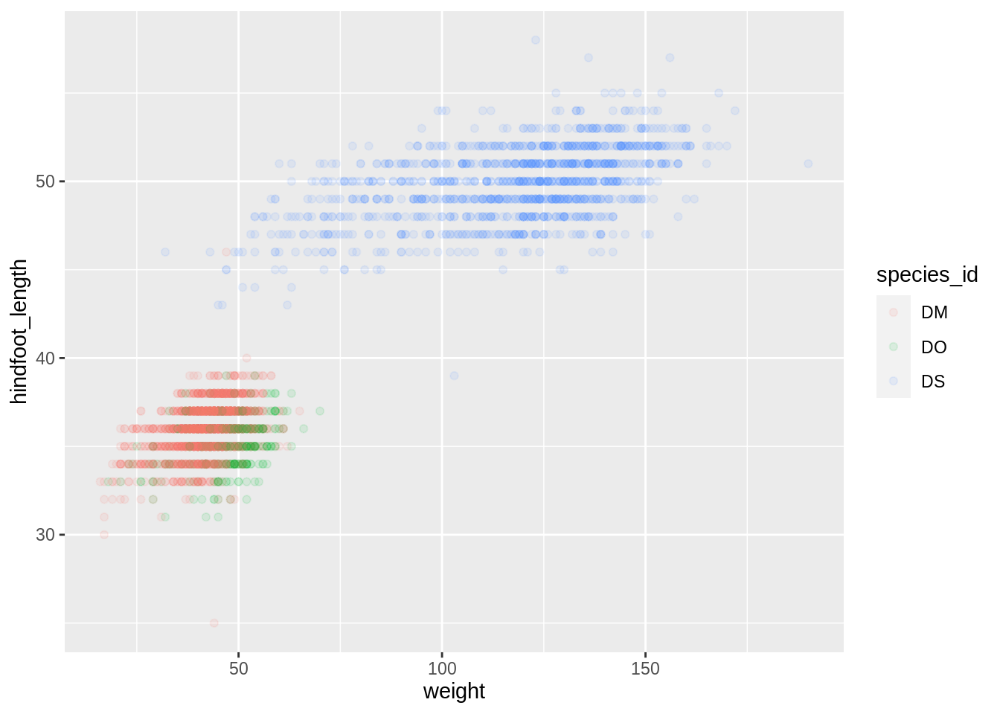
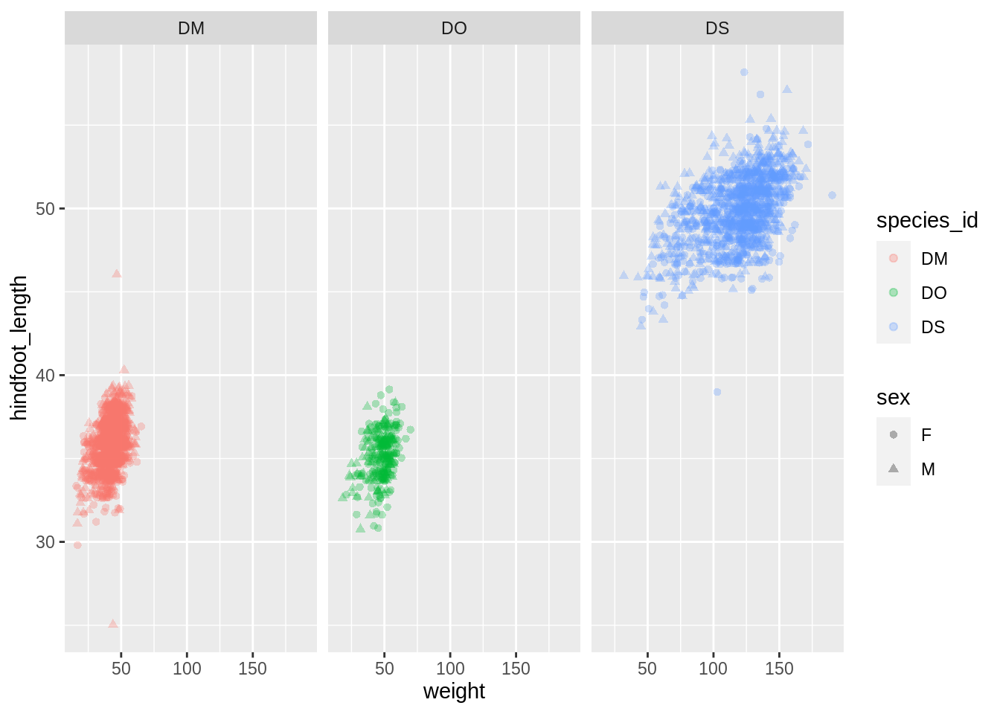
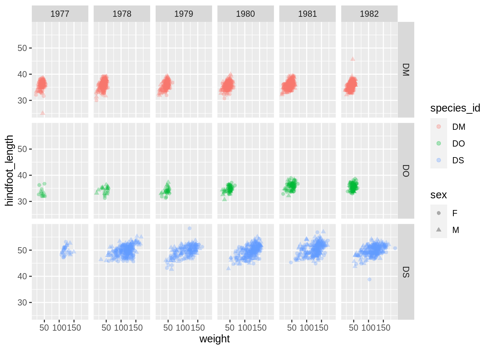
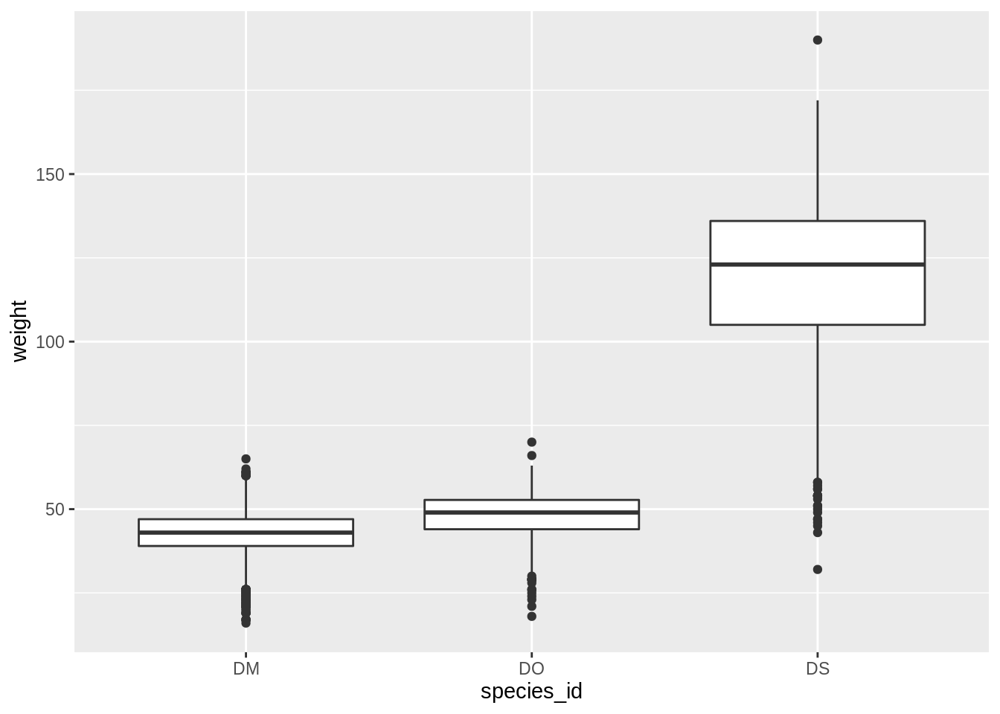
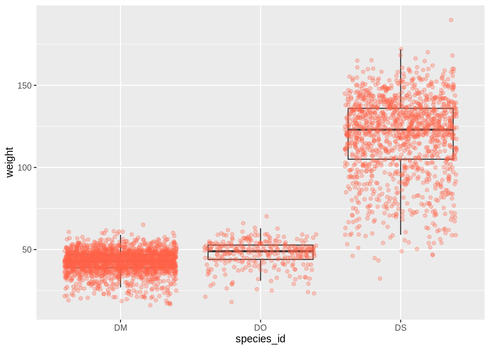

Data visualization with ggplot2
Data Carpentry contributors
Data Visualization with ggplot2
Learning Objectives
- Produce scatter plots, boxplots, and time series plots using ggplot.
- Set universal plot settings.
- Describe what faceting is and apply faceting in ggplot.
- Modify the aesthetics of an existing ggplot plot (including axis labels and color).
- Build complex and customized plots from data in a data frame.
We start by loading the required packages. ggplot2 is included in the tidyverse package.
Later we will learn how to read in data in R, but for now we are going to use a clean and ready to use dataset that is provided by the ratdat data package. To make this dataset available in memory, we need to load this package. We will use the portal_dipo dataset.
Plotting with ggplot2
ggplot2 is a powerful plotting package that makes it simple to create complex plots from data in a data frame. It provides a programmatic interface for specifying what variables to plot, how they are displayed, and general visual properties. Therefore, we only need small changes to the code if the underlying data change or if we decide to change from a bar plot to a scatterplot. This interface helps in creating publication quality plots with minimal amounts of adjustments and tweaking.
ggplot2 functions like data in the ‘long’ tidy format, i.e., a column for every dimension, and a row for every observation. Well-structured data will save you lots of time when making figures with ggplot2. We start learning R by using ggplot2 because it relies on concepts that we will need when we talk about data transformation in the next lessons.
ggplot graphics are built step by step by adding new elements. Adding layers in this fashion allows for extensive flexibility and customization of plots.
To build a ggplot, we will use the following basic template that can be used for different types of plots:
- use the
ggplot()function and bind the plot to a specific data frame using thedataargument
- define a mapping (using the aesthetic (
aes) function), by selecting the variables to be plotted and specifying how to present them in the graph, e.g. as x/y positions or characteristics such as size, shape, color, etc.
add ‘geoms’ – graphical representations of the data in the plot (points, lines, bars).
ggplot2offers many different geoms; we will use some common ones today, including:* `geom_point()` for scatter plots, dot plots, etc. * `geom_boxplot()` for, well, boxplots! * `geom_line()` for trend lines, time series, etc.
To add a geom to the plot use the + operator. Because we have two continuous variables, let’s use geom_point() first to create a scatter plot:

The + in the ggplot2 package is particularly useful because it allows you to modify existing ggplot objects. This means you can easily set up plot templates and explore different types of plots, so the above plot can also be generated with code like this:
Building your plots iteratively
Building plots with ggplot2 is typically an iterative process. We start by defining the dataset we’ll use, lay out the axes, and choose a geom:

Now, we can start modifying this plot to extract more information from it. For instance, we can add transparency (alpha) to avoid overplotting:

It might also be a good idea to use jittering:
ggplot(data = portal_dipo, aes(x = weight, y = hindfoot_length)) +
geom_point(alpha = 0.2, position = position_jitter())
We can also add colors for all the points:
ggplot(data = portal_dipo, aes(x = weight, y = hindfoot_length)) +
geom_point(alpha = 0.1, color = "blue")
Or to color each species in the plot differently, you could specify the variable to use to the color argument within aes():
ggplot(data = portal_dipo, aes(x = weight, y = hindfoot_length)) +
geom_point(alpha = 0.1, aes(color = species_id))
In this case ggplot2 will automatically assign one color for each species.
Challenge
- use of
shapeto differentiate males and females- color by year. What happens? Why is the scale different from when coloring by species?
Faceting
ggplot2 has a special technique called faceting that allows the user to split one plot into multiple plots based on discrete variables included in the dataset. We will use it to make a time series plot for each species:
ggplot(data = portal_dipo, aes(x = weight, y = hindfoot_length)) +
geom_point(aes(color = species_id, shape = sex),
position = position_jitter(), alpha = .3) +
facet_wrap(~ species_id)
ggplot(data = portal_dipo, aes(x = weight, y = hindfoot_length)) +
geom_point(aes(color = species_id, shape = sex),
position = position_jitter(), alpha = .3) +
facet_grid(species_id ~ year)
Challenge
Create a visualization that uses facetting with the sex variable
Boxplots
We can use boxplots to visualize the distribution of weight within each species:

By adding points to boxplot, we can have a better idea of the number of measurements and of their distribution:
ggplot(data = portal_dipo, aes(x = species_id, y = weight)) +
geom_boxplot(alpha = 0) +
geom_jitter(alpha = 0.3, color = "tomato")
Notice how the boxplot layer is behind the jitter layer? What do you need to change in the code to put the boxplot in front of the points such that it’s not hidden?
Challenges
Boxplots are useful summaries, but hide the shape of the distribution. For example, if the distribution is bimodal, we would not see it in a boxplot. An alternative to the boxplot is the violin plot, where the shape (of the density of points) is drawn.
- Replace the box plot with a violin plot; see
geom_violin().In many types of data, it is important to consider the scale of the observations. For example, it may be worth changing the scale of the axis to better distribute the observations in the space of the plot. Changing the scale of the axes is done similarly to adding/modifying other components (i.e., by incrementally adding commands). Try making these modifications:
- Represent weight on the log10 scale; see
scale_y_log10().So far, we’ve looked at the distribution of weight within species. Try making a new plot to explore the distribution of another variable within each species.
- Create a boxplot for
hindfoot_length. Overlay the boxplot layer on a jitter layer to show actual measurements.
Customizing your plot
ggplot2 themes
In addition to theme_bw(), which changes the plot background to white, ggplot2 comes with several other themes which can be useful to quickly change the look of your visualization. The complete list of themes is available at http://docs.ggplot2.org/current/ggtheme.html. theme_minimal() and theme_light() are popular, and theme_void() can be useful as a starting point to create a new hand-crafted theme.
The ggthemes package provides a wide variety of options (including an Excel 2003 theme). The ggplot2 extensions website provides a list of packages that extend the capabilities of ggplot2, including additional themes.
Changing the axes
- xlab
- ylab
- ggtitle
Changing the legend
- labels
- legend position
- no need to go into too much details here, refer to cookbook.
Arranging and Exporting
- Talk about patchwork? not on CRAN yet though
- Show how to use ggsave, save files to
fig_output/folder
library(ratdat)
portal <- dplyr::left_join(surveys, species) %>%
dplyr::left_join(plots) %>%
dplyr::filter(sex %in% c("M", "F")) %>%
dplyr::filter(!is.na(hindfoot_length),
!is.na(weight)) %>%
dplyr::filter(taxa == "Rodent")#> Joining, by = "species_id"#> Joining, by = "plot_id"portal_dipo <- portal %>%
dplyr::filter(species_id %in% c("DO", "DM", "DS"),
year >= 1977 & year <= 1982)More resources
- ggthemeassist is a RStudio-Addin that uses the
rstudioapipackage and provides a GUI for editingggplot2themes. - ggedit is an R package that is used to facilitate
ggplot2formatting. Aesthetic details can be refined easily.
Page built on: 📆 2020-06-24 ‒ 🕢 09:44:15
Data Carpentry,
2018. License. Contributing.
Questions? Feedback?
Please file
an issue on GitHub.
On
Twitter: @datacarpentry